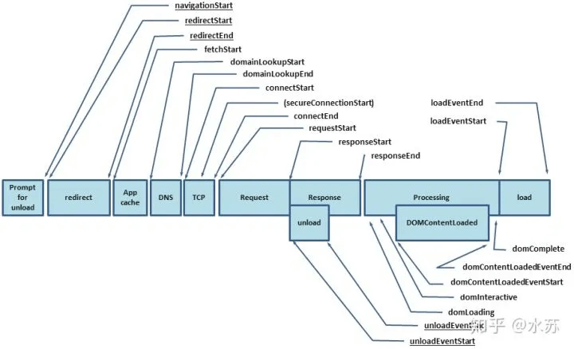
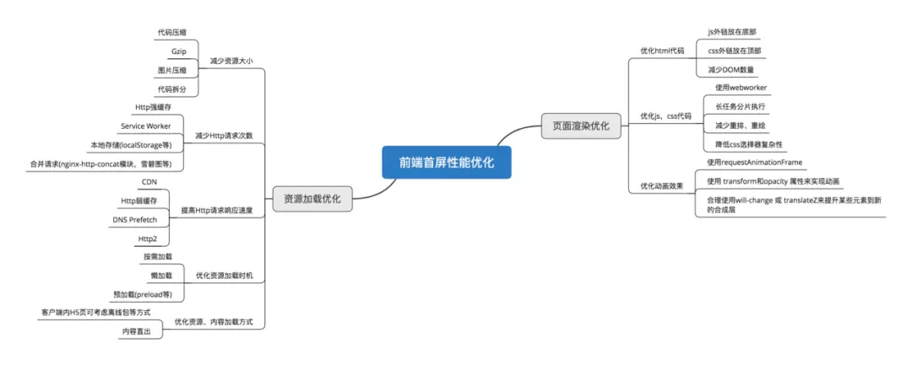

SPA（单页应用）首屏加载速度慢怎么解决？
参考答案
一、什么是首屏加载
首屏时间（First Contentful Paint），指的是浏览器从响应用户输入网址地址，到首屏内容渲染完成的时间，此时整个网页不一定要全部渲染完成，但需要展示当前视窗需要的内容
首屏加载可以说是用户体验中最重要的环节
关于计算首屏时间
利用performance.timing提供的数据：

通过DOMContentLoad或者performance来计算出首屏时间
// 方案一：
document.addEventListener('DOMContentLoaded', (event) => {
console.log('first contentful painting');
});
// 方案二：
performance.getEntriesByName("first-contentful-paint")[0].startTime
// performance.getEntriesByName("first-contentful-paint")[0]
// 会返回一个 PerformancePaintTiming的实例，结构如下：
{
name: "first-contentful-paint",
entryType: "paint",
startTime: 507.80000002123415,
duration: 0,
};二、加载慢的原因
在页面渲染的过程，导致加载速度慢的因素可能如下：
- 网络延时问题
- 资源文件体积是否过大
- 资源是否重复发送请求去加载了
- 加载脚本的时候，渲染内容堵塞了
三、解决方案
常见的几种SPA首屏优化方式
- 减小入口文件积
- 静态资源本地缓存
- UI框架按需加载
- 图片资源的压缩
- 组件重复打包
- 开启GZip压缩
- 使用SSR
减小入口文件体积
常用的手段是路由懒加载，把不同路由对应的组件分割成不同的代码块，待路由被请求的时候会单独打包路由，使得入口文件变小，加载速度大大增加
在vue-router配置路由的时候，采用动态加载路由的形式
routes:[
path: 'Blogs',
name: 'ShowBlogs',
component: () => import('./components/ShowBlogs.vue')
]以函数的形式加载路由，这样就可以把各自的路由文件分别打包，只有在解析给定的路由时，才会加载路由组件
静态资源本地缓存
后端返回资源问题：
- 采用
HTTP缓存，设置Cache-Control，Last-Modified，Etag等响应头
- 采用
Service Worker离线缓存
前端合理利用localStorage
UI框架按需加载
在日常使用UI框架，例如element-UI、或者antd，我们通常会直接引用整个UI库
import ElementUI from 'element-ui'
Vue.use(ElementUI)但实际上我用到的组件只有按钮，分页，表格，输入与警告 所以我们要按需引用
import { Button, Input, Pagination, Table, TableColumn, MessageBox } from 'element-ui';
Vue.use(Button)
Vue.use(Input)
Vue.use(Pagination)组件重复打包
假设A.js文件是一个常用的库，现在有多个路由使用了A.js文件，这就造成了重复下载
解决方案：在webpack的config文件中，修改CommonsChunkPlugin的配置
minChunks: 3minChunks为3表示会把使用3次及以上的包抽离出来，放进公共依赖文件，避免了重复加载组件
图片资源的压缩
图片资源虽然不在编码过程中，但它却是对页面性能影响最大的因素
对于所有的图片资源，我们可以进行适当的压缩
对页面上使用到的icon，可以使用在线字体图标，或者雪碧图，将众多小图标合并到同一张图上，用以减轻http请求压力。
开启GZip压缩
拆完包之后，我们再用gzip做一下压缩 安装compression-webpack-plugin
cnmp i compression-webpack-plugin -D在vue.congig.js中引入并修改webpack配置
const CompressionPlugin = require('compression-webpack-plugin')
configureWebpack: (config) => {
if (process.env.NODE_ENV === 'production') {
// 为生产环境修改配置...
config.mode = 'production'
return {
plugins: [new CompressionPlugin({
test: /\.js$|\.html$|\.css/, //匹配文件名
threshold: 10240, //对超过10k的数据进行压缩
deleteOriginalAssets: false //是否删除原文件
})]
}
}在服务器我们也要做相应的配置 如果发送请求的浏览器支持gzip，就发送给它gzip格式的文件 我的服务器是用express框架搭建的 只要安装一下compression就能使用
const compression = require('compression')
app.use(compression()) // 在其他中间件使用之前调用使用SSR
SSR（Server side ），也就是服务端渲染，组件或页面通过服务器生成html字符串，再发送到浏览器
从头搭建一个服务端渲染是很复杂的，vue应用建议使用Nuxt.js实现服务端渲染
小结：
减少首屏渲染时间的方法有很多，总的来讲可以分成两大部分 ：资源加载优化 和 页面渲染优化
下图是更为全面的首屏优化的方案

大家可以根据自己项目的情况选择各种方式进行首屏渲染的优化
回答思路：
针对SPA（单页应用）首屏加载速度慢的问题，可以通过以下几种方式来解决：
1. 代码优化
- 合并与压缩文件：使用Webpack等工具合并和压缩JavaScript和CSS文件，减少文件大小，提高加载速度。
- 代码分割：利用Webpack的Code Splitting功能，将应用程序代码拆分为多个较小的文件，并在需要时动态加载，减少首屏加载所需的时间。
- 懒加载：对于非首屏必需的组件或资源，采用懒加载技术，只在需要时加载，减少初始加载内容。
2. 图片优化
- 压缩图片：对SPA中的图片进行压缩处理，减小图片大小，从而提升首屏加载速度。
- 使用高效图片格式：如WebP，它比传统的JPEG、PNG等格式具有更高的压缩率和更好的性能。
3. 服务器优化
- 缓存技术：使用缓存技术减少网络请求的数量和时间，例如对常用数据进行缓存，避免每次都重新请求。
- CDN加速：将一些静态资源（如图片、CSS、JS等）放在CDN上，利用CDN的分布式网络缩短资源加载时间。
- 优化服务器响应时间：通过优化数据库查询、使用更快的服务器硬件等方式，提高服务器响应速度。
4. 路由优化
- 路由懒加载：将SPA中不同路由对应的代码进行分割，实现路由懒加载，这样用户切换路由时只加载当前路由所需的代码。
5. 使用服务端渲染（SSR）
- SSR可以在服务器端生成HTML页面，减少客户端的渲染时间和数据请求时间，从而提高首屏加载速度。但需要注意的是，SSR需要服务器端的支持，开发成本相对较高。
6. 其他优化措施
- 骨架屏：在页面加载过程中，先显示一个骨架屏，让用户感觉到页面正在加载，避免白屏问题，提高用户体验。
- 优化JavaScript执行：确保JavaScript代码尽可能地高效，避免不必要的计算和循环，优化算法和数据结构。